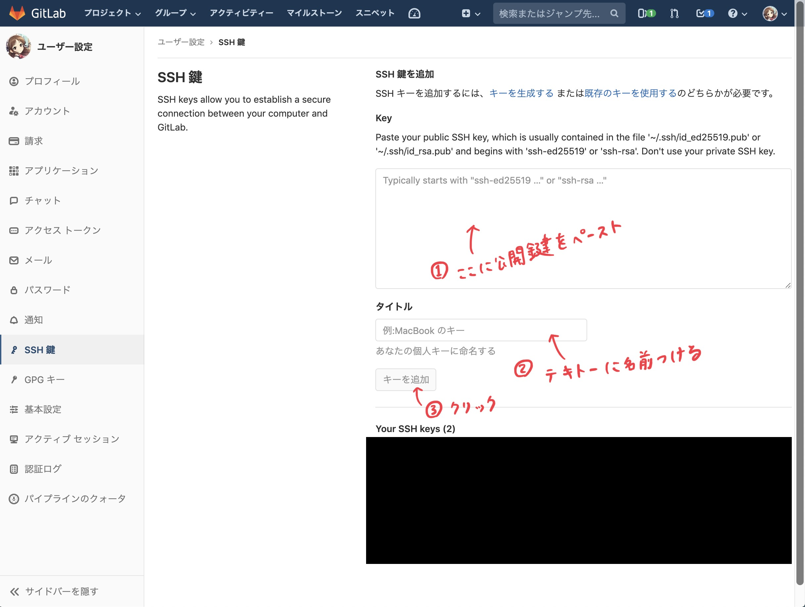

SSH 鍵の生成・登録
今後 git を操作して GitLab 側にアクセスすることになりますが、
その際の認可のために SSH 公開鍵 / 秘密鍵を生成し、公開鍵を GitLab 側に追加する必要があります。
【やること7】 コマンドを実行して、SSH の公開鍵 / 秘密鍵を生成してください。
Windows
$ cd c:/Users/[ユーザー名]/
$ mkdir .ssh
$ c:/git/bin/ssh-keygen -t rsa
Generating public/private rsa key pair.
Enter file in which to save the key (/c/Users/[ユーザー名]/.ssh/id_rsa): <そのままEnterキーを押す>
Enter passphrase (empty for no passphrase): <パスワードを考えて入力する>
Enter same passphrase again: <もう1度パスワードを入力する>
Your identification has been saved in c:/Users/[ユーザー名]/.ssh/id_rsa.
Your public key has been saved in c:/Users/[ユーザー名]/.ssh/id_rsa.pub.
The key fingerprint is:
~~~~
macOS / Linux
$ ssh-keygen -t rsa
Generating public/private rsa key pair.
Enter file in which to save the key (/Users/[ユーザー名]/.ssh/id_rsa): <そのままEnterキーを押す>
Enter passphrase (empty for no passphrase): <パスワードを考えて入力する>
Enter same passphrase again: <もう1度パスワードを入力する>
Your identification has been saved in /Users/[ユーザー名]/.ssh/id_rsa.
Your public key has been saved in /Users/[ユーザー名]/.ssh/id_rsa.pub.
The key fingerprint is:
~~~~
公開鍵を GitLab に登録する
先程生成した id_rsa.pub の内容をクリップボードにコピーしておいて貼り付けてください。
Windows の場合、コマンドプロンプト上で clip < c:/Users/[ユーザー名]/.ssh/id_rsa.pub を実行するとコピーできます。
macOS の場合、ターミナル上で cat ~/.ssh/id_rsa.pub | pbcopy を実行するとコピーできます。
あとは以下の通りです。
